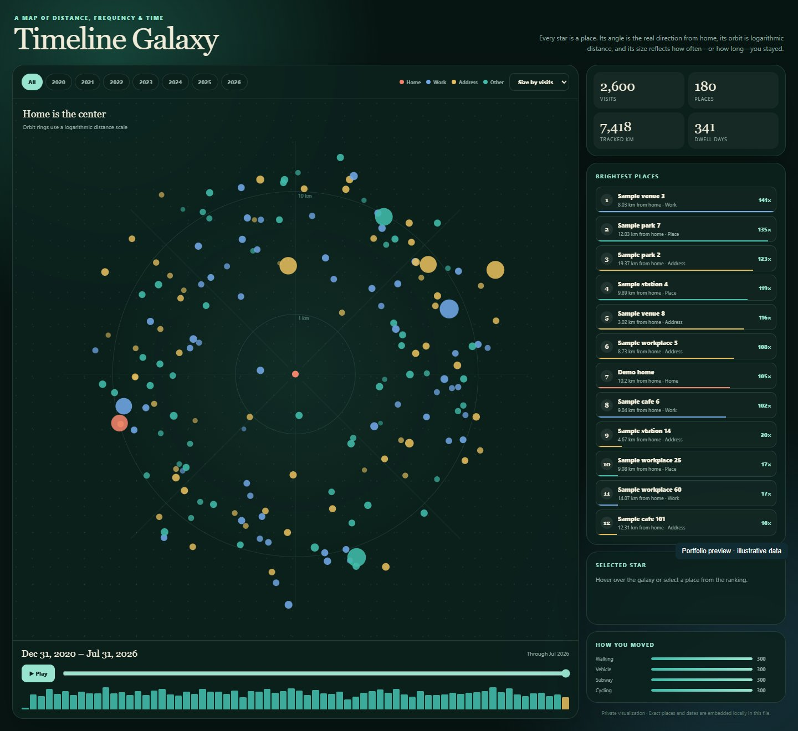

Two views of location history
I built Timeline Atlas to turn a Google Timeline export into an interactive view of places, visits, and travel. The project includes a Leaflet map dashboard and a separate Canvas visualization called Timeline Galaxy.
The local dataset covers 5,488 visits across 1,845 places. The map answers where I went and how often. Galaxy shows how distance, direction, visit frequency, and time relate.
Data scale
5,488 visits1,845 places8,587 routes67,247 path pointsImplementation
JavaScriptLeafletCanvasJSONHTML/CSSMap dashboard
The first HTML view combines a map with date filters, place rankings, and visit statistics. Colored markers distinguish home, work, searched addresses, and other places. The interface supports point and density views, street and minimal basemaps, and optional travel paths.

Filtering and ranking
Year shortcuts and date inputs select a time window. Search matches place aliases, types, and IDs. A minimum-visit slider narrows the results. Rankings switch between visit count, estimated dwell time, and most recent visit.
Map markers and the ranked list respond to the same filters. Selecting a place opens its details. The home/work toggle controls whether those points appear in the view.
Exports and place labels
CSV export includes each filtered place's rank, name, type, visit count, estimated dwell hours, first and last visit, coordinates, and place ID. Custom aliases persist in browser local storage. Reverse geocoding uses a request queue to resolve address labels.
Timeline Galaxy
The second HTML view arranges places around a central reference point. Angle reflects geographic direction. A logarithmic radius represents distance, making nearby and distant places visible together. Point size switches between visit count and estimated dwell time.

Time and interaction
A month slider, year filters, and playback controls reveal changes over time. Monthly bars show visit activity. Hovering over a point reveals its label and visit count. Selecting a point or ranked place opens a detail panel.
The side panel summarizes visits, places, distance, and dwell time. An activity breakdown groups travel modes such as walking, driving, subway trips, and cycling.
Data model and files
Both views use place records and visit arrays. Each visit references a place index and stores start time, end time, and dwell hours. This links repeated visits to a shared place record. Galaxy adds activity records, distance, and bearing for its radial layout.
Google Timeline export
|
v
Places + visits + summary data
|
+-- timeline_map.html
| Leaflet map, filters, rankings, CSV export
| |
| +-- timeline_routes.js (loaded on demand)
|
+-- timeline_galaxy.html
Canvas view, monthly playback, activity breakdownThe local route file contains travel-path data used by the map. Route rendering is separate from the initial place view, so opening the dashboard does not require drawing every path.
Rendering and responsiveness
Leaflet Canvas renderers draw points and routes. The map checks the selected dates and viewport before drawing travel paths. Filter changes and map events use short delays to avoid repeated redraws during rapid input.
Galaxy uses Canvas drawing and pointer hit testing. Animation-frame scheduling limits hover redraws. Its layout adjusts to the available screen size, and the monthly controls update the visualization and summary panels together.
The map includes a fallback basemap and tile timeouts. Address requests run through a queue with pauses between requests. These choices help the interface handle external map and geocoding services.
Public preview and local data
The screenshots show the real interfaces loaded with synthetic sample records. Their totals differ from the local dataset counts above. The original location export, route coordinates, and personal place labels stay local.
This case study highlights the data model, interaction design, and rendering work. The public page does not expose the personal dataset or offer a download of the original HTML files.